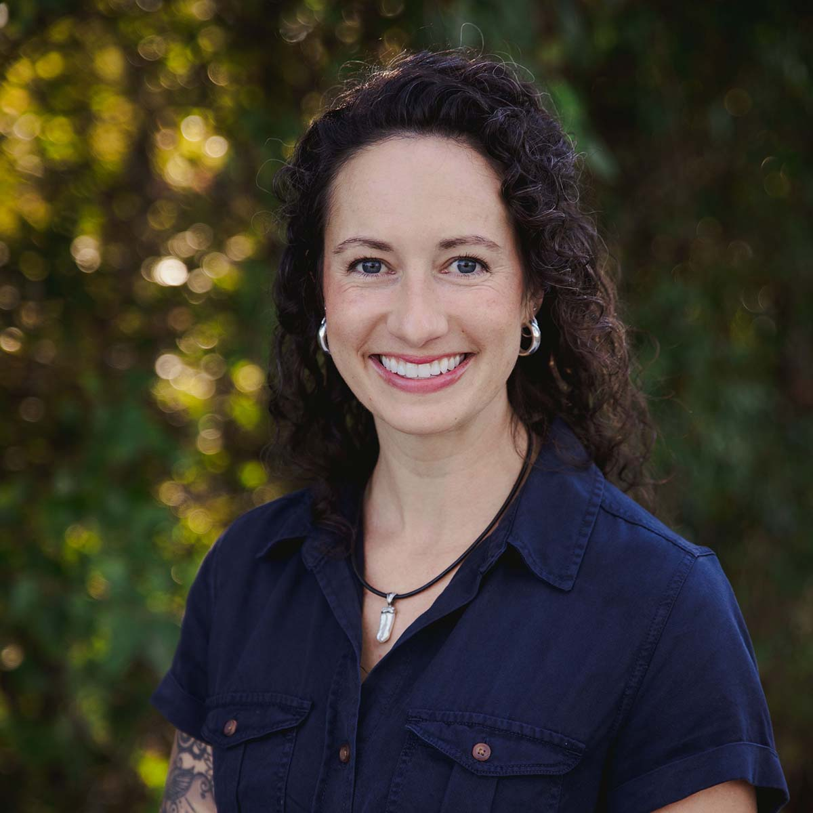

Lindsey
My husband Ian and I are highschool sweethearts and we’ve been married 19 years. We have three children; Ivy, Ezra, and Axel. We’ve lived in Grimes for 17 years. God has connected us with many precious friends, most with which our life overlaps between homeschooling and church affiliation quite a bit, so we really feel like we’re “doing life” with people.
Both myself and Ian were homeschooled growing up and both of us experienced a unique and custom education that served us well in life, allowing us to complete our younger formal education years while pursuing passions of entrepreneurial nature, maintaining sibling relationships, and growing in our relationship with the Lord. We also had the opportunity to pursue sports and music alongside peers in different educational programs. Our combined experience was something that made us partial to homeschooling and when our first child was old enough, we joined a classical faith based homeschool community and haven’t looked back! We desired the freedom to disciple our kids in the Lord while giving them a robust education that would spur them on towards excellence and a pursuit of the Excellent One.
A huge joy to me, as the primary homeschool parent, is the blessing of watching the “Aha! moments”, where a math or reading concept clicks, or a child makes a meaningful integration, or perhaps experiences how their learning applies to real life…especially Latin connections! I love being on the front lines to see these learning breakthroughs happen. I also love reading aloud to my kids and learning the new role of driving instructor!
I’m currently a board member for Gloria Domini Classical Community. Some of my main tasks have been in the area of marketing, but I collaborate with the other board members on matters of program and organizational specifics, curriculum input, financials and more. We are a small board, but we equally share passion for classically minded home based community driven education and it has been a blessing to see how each member works within their wheelhouse and also stretches to learn new things in order to accomplish the tasks before us and serve families well.
When our homeschool days are not in session, you can find me at the gym with some weights, on the couch with a crochet hook and yarn, out doing yard work, watching my kids in their various sports, at the pool or on a bike ride or doing church activities with the family. My husband and I also own and operate some rental properties, so that keeps us busy in all the margins.